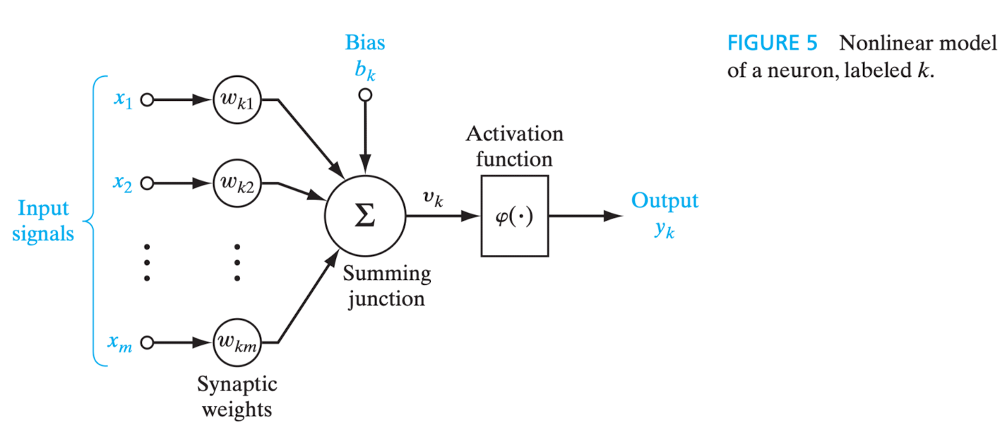

# 1.2

Introdução (p. 1/46)
Definição de rede neural [1]
Desde o início, o estudo das redes neurais artificiais foi pautado pela observação de que tanto o cérebro humano quanto os computadores convencionais são sistemas de processamento de informações[2] e, por conseguinte, realizam trabalho computacional[3]. Não apenas seu funcionamento é bastante distinto, mas a capacidade computacional do cérebro - não só humano, mas também o de outros animais - supera, em muito, a dos computadores digitais.
O cérebro é um sistema de processamento de informações complexo, não linear e paralelo[4]. Suas estruturas fundamentais são os neurônios, organizados de modo a realizar tarefas computacionais, a exemplo do reconhecimento de padrões. Portanto, assim no cérebro como nas redes artificiais, os neurônios constituem as unidades de processamento da informação.
A plasticidade[5], característica que permite a adaptação do indivíduo ao ambiente em que está inserido, também é importante para as redes neurais artificiais.
Em linhas gerais, pode-se dizer que uma rede neural artificial é um modelo computacional inspirado no modo como o cérebro realiza o processamento de informações. Nas palavras de Haykin (2009, p. 2), “[…] a neural network is a machine that is designed to model the way in which the brain performs a particular task or function of interest”.
Já como definição formal, o autor dá às redes neurais, vistas como uma máquina adaptativa[6], o seguinte conceito:
A neural network is a massively parallel distributed processor made up of simple processing units that has a natural propensity for storing experiential knowledge and making it available for use. It resembles the brain in two respects:
- Knowledge is acquired by the network from its environment through a learning process.
- Interneuron connection strengths, known as synaptic weights, are used to store the ac-
quired knowledge. (HAYKIN, 2009, p. 2)
Em português, conforme definição dada na edição anterior do livro:
Uma rede neural é um processador maciçamente paralelamente distribuído constituído de unidades de processamento simples, que tem uma propensão natural para armazenar conhecimento experimental e torná-lo disponível para uso. Ela se assemelha ao cérebro em dois aspectos:
- O conhecimento é adquirido pela rede a partir de seu ambiente através de um processo de aprendizagem.
- Forças de conexão entre os neurônios, conhecidas como pesos sinápticos, são utilizadas para armazenar o conhecimento adquirido. (HAYKIN, 2001, p. 28)
Assim, na medida do possível, as redes neurais artificiais assemelham-se e são modeladas à luz do cérebro humano [interconexão de unidades computacionais simples - neurônios - assim no cérebro biológico, como nas redes neurais artificiais].
O processo de aprendizagem - algoritmo de aprendizagem - tradicionalmente aplicado em redes neurais consiste na modificação dos pesos sinápticos das conexões neuronais e deve necessariamente resultar em atividade computacional útil, ou seja, o alcance do objetivo almejado.
A rede neural pode alterar sua própria estrutura (topologia).
Conforme o autor, a técnica de modificação dos pesos sinápticos guarda muita similaridade com a teoria dos filtros adaptativos lineares (linear adaptive filter theory) [7].
Benefícios das redes neurais
A capacidade computacional das redes neurais é resultado de sua estrutura massiva e paralelamente distribuída, bem como da habilidade de aprender e generalizar. “A generalização se refere ao fato de a rede neural produzir saídas adequadas para entradas que não estavam presentes durante o treinamento (aprendizagem). Estas duas capacidades de processamento de informação [aprender e generalizar] tornam possível para as redes neurais resolver problemas complexos (de grande escala) que são atualmente intratáveis.” (HAYKIN, 2001, p. 28) [da 2 edição, em português].
A generalização se refere ao fato de a rede neural produzir saídas adequadas para entradas que não estavam presentes durante o treinamento (aprendizagem) (HAYKIN, 2001, p. 28).
Generalization refers to the neural network’s production of reasonable outputs for inputs not encountered during training (learning) (HAYKIN, 2009, p. 2).
São produzidas saídas (outputs) adequadas para as entradas (inputs) fornecidas - good approximate solutions, do original em inglês (Haykin, 2009). Atualmente, o problema grande e complexo deve ser decomposto em problemas menores, os quais redes neurais de propósito específico têm capacidade de resolver.
Principais capacidades e propriedades das redes neurais artificiais (p. 2/6):
- Não linearidade (embora individualmente os neurônios artificiais possam ser lineares ou não lineares);
- Mapeamento de entrada e saída (na aprendizagem supervisionada);
- Adaptabilidade (capacidade de modificar os pesos sinápticos);
- Dilema estabilidade x plasticidade: “Para aproveitar todos os benefícios da adaptabilidade, as constantes de tempo principais do sistema devem ser grandes o suficiente para que o sistema ignore perturbações espúrias mas ainda assim serem suficientemente pequenas para responder a mudanças significativas no ambiente” (HAYKIN, 2001, p. 30).
- Resposta a evidências (não apenas classificar o padrão adequadamente, mas informar o nível de confiabilidade da escolha, rejeitando ambiguidade);
- Informação contextualizada (“O conhecimento é representado pela própria estrutura e estado de ativação de uma rede neural.” (HAYKIN, 2001, p. 30));
- Tolerância a falhas (devido à sua estrutura massiva e paralelamente distribuída);
- Implementação em VSLI (very-large-scale-integration) [8];
- Uniformidade de análise e projeto ("[…] as redes neurais desfrutam de universalidade como processadores de informação" (HAYKIN, 2001, p. 30));
- Analogia neurobiológica (motivadas por estruturas biológicas do cérebro humano).
O cérebro humano[9]
O sistema nervoso humano pode ser visto como um sistema de três estágios, do qual fazem parte cérebro, receptores e atuadores. Os estímulos - entrada (input) do sistema - são captados e convertidos em sinais elétricos pelos receptores; o cérebro continuamente recebe e processa esses sinais; os atuadores convertem os sinais recebidos de modo a gerar as ações (respostas) apropriadas, que constituem a saída (output) do sistema. A informação captada é transmitida em um único sentido - receptor > cérebro > atuador -, mas o sistema se retroalimenta no sentido oposto dessa transmissão - atuador > cérebro > receptor (feedback).
Foi o trabalho de Santiago Ramón y Cajal que, em 1911, introduziu o neurônio como estrutura fundamental do cérebro. Os neurônios são cinco a seis ordens de grandeza mais lentos do que os circuitos digitais e, ainda assim, o cérebro é muito mais eficiente do que computadores em termos de eficiência energética. Provavelmente, isso é resultado da enorme quantidade de células neuronais e à massiva interconexão entre elas - a eficiência energética do cérebro humano é de $10^{-16}$ joules por operação por segundo. Eles se apresentam sob diversas formas e tamanhos, sendo que um dos mais comuns é a denominada célula piramidal, e se organizam na anatomia cerebral em diversos níveis e em pequena ou grande escala.
Essa estrutura hierárquica vai, em menor nível, das moléculas responsáveis pelas sinapses ao próprio sistema nervoso central, último nível hierárquico. A estrutura completa é apresentada por Haykin (2009, p. 9), na figura 3, da seguinte forma: moléculas > sinapses > microcircuitos neurais > árvore dendrítica > neurônio > circuitos locais > circuitos regionais > sistema nervoso central.
The synapses represent the most fundamental level, depending on molecules and ions for their action. […] A neural microcircuit refers to an assembly of synapses organized into patterns of connectivity to produce a functional operation of interest. A neural microcircuit may be likened to a silicon chip made up of an assembly of transistors. At the next level of complexity, we have local circuits […] made up of neurons with similar or different properties; there neural assemblies perform operations characteristic of a localized region in the brain. They are followed by interregional circuits made up of pathways, columns, and topographic maps, which involve multiple regions located in different parts of the brain.
Topographic maps are organized to respond to incoming sensory information. These maps are often arranged in sheets, […] stacked in adjacent layers in such a way that stimuli from corresponding points in space lie above or below each other. […] different sensory inputs […] are mapped onto corresponding areas of the cerebral cortex in an orderly fashion. At the final level of complexity, the topographic maps and other interregional circuits mediate specific types of behavior in the central nervous system. (HAYKIN, 2009, p. 7/9)
O equivalente, na 2 edição, em português:
As sinapses representam o nível mais fundamental, dependente de moléculas e íons para sua ação. […] Um microcircuito neural se refere a um agrupamento de sinapses organizadas em padrões de conectividade para produzir uma operação funcional de interesse. Um microcircuito neural pode ser comparado a um circuito de silício constituído por um agrupamento de transistores. […] No nível seguinte de complexidade nós temos circuitos locais […] constituídos por neurônios com propriedades similares ou diferentes; estes agrupamentos neurais realizam operações características de uma região localizada no cérebro. Eles são seguidos por circuitos inter-regionais constituídos por caminhos, colunas e mapas topográficos, que envolvem regiões múltiplas localizadas em partes diferentes do cérebro.
Os mapas topográficos são organizados para responder à informação sensorial incidente. Estes mapas são frequentemente arranjados em folhas, […] empilhados em camadas adjacentes de tal modo que estímulos advindos de pontos correspondentes no espaço se localizem acima ou abaixo de cada um deles. […] diferentes entradas sensoriais […] são mapeadas sobre áreas correspondentes do córtex cerebral de forma ordenada. No nível final de complexidade, os mapas topográficos e outros circuitos inter-regionais medeiam tipos específicos de comportamento no sistema nervoso central. (HAYKIN, 2001, p. 33/36)
As sinapses são unidades estruturais e funcionais elementares responsáveis por intermediar a comunicação entre neurônios[10] e, em maioria, são químicas. Nelas, um sinal elétrico pré-sináptico é transformado em sinal químico pela liberação de neurotransmissores, e depois se converte novamente em sinal elétrico, pós-sináptico (Shepherd; Koch, 1990 apud Haykin, 2009). “Nas descrições tradicionais da organização neural, assume-se que uma sinapse é uma conexão simples que pode impor ao neurônio receptivo excitação ou inibição, mas não ambas.” (HAYKIN, 2001, p. 33). O surgimento de novas sinapses ou a modificação das já existentes são os mecanismos responsáveis pela plasticidade cerebral e, consequentemente, pela aprendizagem.
A saída (output) do processamento neuronal são, no mais das vezes, impulsos elétricos denominados potenciais de ação[11] ou spikes - na 2 edição, em português, o termo é traduzido como impulso.
Modelos de neurônio [artificial]
Em sua forma mais rudimentar, o modelo de um neurônio artificial possui três elementos básicos: um conjunto de sinapses ou elos de ligação (synapses or connecting links), cada um com seu próprio peso ou força (peso sináptico/synaptic weight) [12]; um somador (adder); e uma função de ativação (activation function).
Eis a ilustração do modelo (HAYKIN, 2009, p. 11):

Depreende-se que um sinal de entrada - representado pela letra $x$ - é direcionado à sinapse - representada pela letra $j$ -, que está conectada ao neurônio - representado pela letra $k$ - e que, por sua vez, possui um peso sináptico - representado pela letra $w$. Noutras palavras, considerados quaisquer índices, diz-se que “[…] um sinal $x_j$ na entrada da sinapse $j$ conectada ao neurônio $k$ é multiplicada pelo peso sináptico $w_{kj}$. […] O primeiro índice se refere ao neurônio em questão e o segundo se refere ao terminal de entrada da sinapse à qual o peso se refere.” (HAYKIN, 2001, p. 36).
O somatório dos sinais de entrada ponderados pelos pesos sinápticos de cada neurônio pode, ou não, executar a função de ativação, que visa “restringir a amplitude da saída de um neurônio. A função de ativação é também referida como função restritiva já que restringe (limita) o intervalo permissível de amplitude do sinal de saída a um valor finito. Tipicamente, o intervalo normalizado da amplitude da saída de um neurônio é escrito como o intervalo unitário fechado [0, 1] ou alternativamente [-1, 1]” (HAYKIN, 2001, p. 37). Na terminologia em inglês, a dita função restritiva é denominada squashing function (HAYKIN, 2009, p. 10).
O resultado - saída/output - do cálculo realizado pelo somador (na figura, summing junction) descreve um combinador linear (linear combiner), representado pela letra $u$ (não aparece no modelo acima), que consiste na soma dos valores da entrada do sistema multiplicada pelo peso sináptico do neurônio.
Pode ser considerado no cálculo o bias (viés, em tradução literal), que “tem o efeito de aumentar ou diminuir a entrada líquida da função de ativação, dependendo se ele é positivo ou negativo, respectivamente” (HAYKIN, 2001, p. 37). No modelo acima, é representado por $b_k$, do que se infere que cada neurônio pode ter um viés específico. Tem-se, ainda, que o bias aplica uma transformação afim (affine transformation, em inglês) à saída do somador, que equivale à entrada líquida da função de ativação.
A saída do combinador linear - $u_k$ -, após a incidência do bias - $b_k$ -, se for o caso, é a entrada líquida (net input) da função de ativação. Esta, por sua vez, é representada na imagem por $\phi(\cdot)$ e sua aplicação resulta na saída (output) do próprio neurônio, representada pela letra $y$.
Portanto, para o neurônio $k$, sua saída é dada por $y_k = \phi(u_k + b_k)$, cujos parâmetros são a saída do combinador linear ($u_k$) e o bias do neurônio ($b_k$).
Até aqui, a representação matemática do neurônio $k$ é dada por:
$$
u_k = \sum_{j=1}^{m} w_{kj}x_j
$$
" ">e
" ">$$
y_k = \phi(u_k + b_k)
$$
A equação
$$
v_k = u_k + b_k
$$
mostra que o campo local induzido (induced local field) ou potencial de ativação (activation potential)[13], representado pela letra $v$, do neurônio $k$ tem correlação com a saída do combinador linear - $u_k$ - e o bias - $b_k$, de modo a deslocar o gráfico da equação a depender se o valor do bias é positivo ou negativo.
Tipos de funções de ativação
Função de limiar ou limite (threshold function)
É empregada no modelo de McCulloch-Pitts, no qual “a saída de um neurônio assume o valor de 1, se o campo local induzido daquele neurônio é não-negativo, e 0 caso contrário.” (HAYKIN, 2001, p. 39). É um modelo determinístico.
Em notação matemática, tem-se que
$$
\phi(v) = \left{
\begin{array}{ll}
1, & \text{se } v \geq 0 \
0, & \text{se } v < 0
\end{array}
\right.
$$
, e para a saída $y_k$ do neurônio
$$
y(k) = \left{
\begin{array}{ll}
1, & \text{se } v \geq 0 \
0, & \text{se } v < 0
\end{array}
\right.
$$
Para esse neurônio, o campo local induzido ou potencial de ativação é dado por
$$
v_k = \sum_{j=1}^{m} w_{kj}x_j + b_k
$$
Função sigmoide
É a mais comumente utilizada na construção de redes neurais. “Ela é definida como uma função estritamente crescente que exige um balanceamento adequado entre comportamento linear e não-linear” (HAYKIN, 2001, p. 40), de modo que pode assumir valores contínuos no intervalo $[0, 1]$. Essa função é diferenciável.
Nos casos em que seja interessante que os valores da função de ativação se estenda de $-1$ a $+1$, em vez de $0$ a $+1$, tem-se a denominada função sinal (signum function), que é definida por
$$
\phi(v) = \left{
\begin{array}{}
1, & \text{se } v > 0 \
0, & \text{se } v = 0 \
-1, & \text{se } v < 0
\end{array}
\right.
$$
, e sua função sigmoide (função tangente hiperbólica) é dada por
$$
\phi(v) = tanh(v)
$$
Modelo estocástico de neurônio
Adição de uma variável aleatória ao modelo de McCulloch-Pitts, que é determinístico, de modo a torná-lo estocástico, isto é, probabilístico. Isso porque um modelo estocástico de neurônio tenta predizer possíveis resultados (saídas) levando em consideração a existência de um ou mais parâmetros variáveis ao longo do tempo. Ao contrário, em um modelo determinístico, as saídas devem ser sempre as mesmas para os mesmos valores de entrada.
Se $x$ representar o estado de um neurônio, $v$ o seu potencial de ativação e $P(v)$ a probabilidade de disparo, isto é, de que ocorra mudança de estado, tem-se que
$$
x = \left{
\begin{array}{ll}
+1 & \text{com probabilidade } P(v) \
-1 & \text{com probabilidade } 1 - P(v)
\end{array}
\right.
$$
, e
$$
P(v) = \frac{1}{1 + exp(-v/T)}
$$
, em que $T$ é a dita pseudotemperatura, “[…] utilizada para controlar o nível de ruído e portanto a incerteza de disparar […] como um parâmetro que controle as flutuações térmicas que representam os efeitos do ruído sináptico. Note que quanto $T \rightarrow 0$, o neurônio estocástico […] se reduz a uma forma sem ruído (i.e., determinística), que é o modelo de McCulloch-Pitts.” (HAYKIN, 2001, p. 41).
Redes neurais como grafos dirigidos
Feedback
Arquiteturas de redes neurais
Representação do conhecimento
Regras
Informação prévia no projeto de uma rede neural
Invariâncias no projeto de uma rede neural
Processos de aprendizagem
Tipos de aprendizagem
Principais conceitos/definições/ideias extraídos do texto original
Notas
[1] Uma rede neural artificial (ou apenas rede neural) é um modelo preditivo baseado na dinâmica do cérebro, que tem uma série de neurônios conectados. Cada um deles analisa as saídas dos outros neurônios ligados nele, faz um cálculo e, em seguida, dispara (se o valor calculado exceder um limite) ou não (se não). Portanto, as redes neurais artificiais são formadas por neurônios artificiais que executam cálculos semelhantes a partir de entradas. As redes neurais resolvem uma ampla variedade de problemas, como reconhecimento de caracteres manuscritos e detecção facial, e são muito usadas no aprendizado profundo, um dos subcampos mais inovadores do data science. No entanto, a maioria das redes neurais são “caixas-pretas” — analisar seus detalhes não explica como elas resolvem os problemas. Além disso, é difícil treinar grandes redes neurais. Para a maioria dos problemas típicos do início de carreira de um cientista de dados, elas não são a melhor opção. (GRUS, 2021, p. 245)
[2] Vide complemento #3 (dado, informação, conhecimento e competências).
[3] A palavra computar significa “fazer o cômputo de; calcular; orçar; contar; processar através de computadores”. Fonte: Dicionário Priberam da Língua Portuguesa.
[4] Sobre o processamento em paralelo, das Neurociências colhe-se que, ao que parece, os comportamentos humanos de maior complexidade não decorrem da sinalização de um único neurônio, mas pela ação de muitos não necessariamente localizados na mesma região cortical (Kandel et al., 2014).
O envolvimento de vários grupos neurais ou rotas para transmitir uma informação similar é chamado processamento em paralelo. O processamento em paralelo também ocorre em uma única via quando diferentes neurônios nessa via executa ações similares simultaneamente. […] O campo da ciência computacional conhecido como inteligência artificial originalmente usou o processamento serial para simular os processos cognitivos do encéfalo […] Esses modelos seriais executavam muitas tarefas de forma adequada, inclusive jogar xadrez. Entretanto, eram muito ruims em outras tarefas que o encéfalo faz quase instantaneamente, com o reconhecimento de faces ou a compreensão do discurso. […] Nesses modelos [redes neurais], elementos do sistema processam a informação simultaneamente usando conexões de pró-ação e de retroalimentação. É interessante observar que, em sistemas com circuitos de retroalimentação é a atividade dinâmica do sistema que determina o desfecho do processamento, não as aferências ou condições iniciais. Modelos de redes neurais capturam bem a arquitetura altamente recorrente da maioria dos circuitos neurais reais e também a capacidade do encéfalo de funcionar na ausência de uma aferência sensorial específica vinda de fora do corpo […] Modelos de redes neurais também demonstram que a análise de elementos individuais de um sistema pode não ser suficiente para decodificar a mensagem dos potenciais de ação. De acordo com tal visão de redes neurais, o que faz o encéfalo ser um deslumbrante órgão que processa a informação não é a complexidade de seus neurônios, mas o fato de ter muitos elementos interconectados de várias formas complexas." (KANDEL et al., 2014, p. 32/33)
[5] Vide complemento #1 (plasticidade).
[6] Nesse contexto, diz-se que uma rede neural é uma máquina adaptativa exatamente pela capacidade aprendizado (autoajuste) e adaptação a partir dos dados de entrada, o que permite o ajuste de parâmetros (pesos sinápticos) para obter o melhor desempenho na tarefa.
[7] Sobre filtros adaptativos (adaptive filter):
The term “filter” is often used to describe a device in the form of a piece of physical hardware or software that is applied to a set of noisy data in order to extract information about a prescribed quantity of interest. […] In any event, we may use a filter to perform three basic information-processing tasks:
- Filtering, which means the extraction of information about a quantity of interest at a time $t$ by using data measured up to and including time $t$.
- Smoothing, which differs from filtering in that information about the quantity of interest need not to be available at time $t$, and data measured later than time $t$ can be used in obtaining this information. This means that in the case of smoothing there is a delay in producing the result of interest. Since in the smoothing process we are able to use data obtained not only up to time $t$ but also data obtained after time $t$, we would expect smoothing to be more accurate in some sense than filtering.
- Prediction, which is the forecasting side of information processing. The aim here is to derive information about what the quantity of interest will be like at some time ${t + T}$ in the future, for some ${T > 0}$, by using data measured up to and including time $t$.
We may classify filters into linear and nonlinear. A filter is said to be linear if the filtered, smoothed, or predicted quantity at the output of the device is a linear function of the observations applied to the filter input. Otherwise, the filter is nonlinear. […] By such a device [an adaptive filter] we mean one that is self-designing in that the adaptive filter relies for its operation on a recursive algorithm, which makes it possible for the filter to perform satisfactorily in an environment where complete knowledge of the relevant signal characteristics is not available. (HAYKIN, 1995, p. 1/3)
[8] VLSI, do inglês Very Large Scale Integration, é um processo de fabricação de circuitos eletrônicos integrados com altíssima quantidade de transistores em um único chip.
[9] [11] Vide complemento sistema nervoso, encéfalo e neurônio para consulta mais detalhada sobre o assunto, a partir de referências da literatura de Neurociências.
[10] A sinapse é uma região específica, ao passo que ao processo de comunicação entre neurônios dá-se o nome de transmissão sináptica (Kandel et al., 2004). Nesse sentido, “o local especializado em que um neurônio se comunica com outro é chamado de sinapse […]” (KANDEL et al., 2014, p. 157).
[12] Em se tratando de peso sináptico, também referido como força sináptica, “[…] muitos modelos neurais estão equipados com processos dinâmicos que [se]reorganizam continuamente […] criam ou eliminam neurônios ou suas conexões […] ajustam as forças de conexões sinápticas existentes ou mudam outras propriedades dos neurônios. […] O termo peso sináptico frequentemente é utilizado para se referir à força de determinada conexão sináptica, enquanto o termo matriz de pesos sinápticos aplica-se ao conjunto de todos os pesos sinápticos em uma rede. A força da sinapse do neurônio $j$ sobre o neurônio $i$ é descrita como $W_{ij}$. Esse é o elemento da matriz de pesos localizado na intersecção da linha $i$ com a coluna $j$.” (KANDEL et al., 2014, p. 1387). O fenômeno da modificação dos pesos sinápticos é consequência da plasticidade - regra de plasticidade sináptica -, que Kandel et al. (2014) argumenta que não deve se confundida com a regra da aprendizagem, embora sejam comumente utilizadas como sinônimas, pois aprendizado é a “[…] expressão do comportamento de uma rede e não de uma única sinapse” (KANDEL et al., 2014, p. 1387). Nesse sentido, a regra ou plasticidade hebbiana, em alusão a Donald Hebb, ensina que “[…] as sinapses são modificadas com base na atividade temporalmente contígua dos neurônios pré e pós-sinápticos” (KANDEL et al., 2014, p. 1387). Conforme Bear et al. (, p. 878), “Donald Hebb propôs que cada sinapse individual se torna um pouco mais forte quando participa com sucesso no disparo de um neurônio pós-sináptico”, embora haja trabalhos no sentido de que a mudança do peso sináptico esteja mais proximamente relacionada ao neurônio pré-sináptico, apenas (Gallinaro; Scholl; Clopath, 2023).
[13] Em referência ao potencial de ação da célula biológica.
Referências complementares consultadas durante o fichamento deste capítulo
BEAR, Mark F.; CONNORS, Barry W.; PARADISO, Michael A. Neurociências: desvendando o sistema nervoso. Trad. Carla Dalmaz et al. 4. ed. Porto Alegre: Artmed, 2017.
GALLINARO, Júlia V.; SCHOLL, Benjamin; CLOPATH, Claudia. 2023. Synaptic weights that correlate with presynaptic selectivity increase decoding performance. PLOS Computational Biology 19(8): e1011362. https://doi.org/10.1371/journal.pcbi.1011362.
GRUS, Joel. Data science do zero: noções fundamentais com Python. Trad. Welington Nascimento. 2 ed. E-book. Rio de Janeiro: Alta Books, 2021.
HAYKIN, Simon. Adaptive filter theory. 3 ed. Upper Saddle River, NJ: Prentice Hall, 1995.
KANDEL, Eric R.; SCHWARTZ, James H.; JESSELL, Thomas M.; SIEGELBAUM, Steven A.; HUDSPETH, A. J. Princípios de neurociências. Trad. Ana Lúcia Severo Rodrigues et al. 5. ed. Porto Alegre: AMGH, 2014.
VERY LARGE SCALE INTEGRATION. In: WIKIPEDIA. Disponível em https://en.wikipedia.org/wiki/Very_Large_Scale_Integration. Acesso em 22 jan. 2024.
[ 🔝 ]